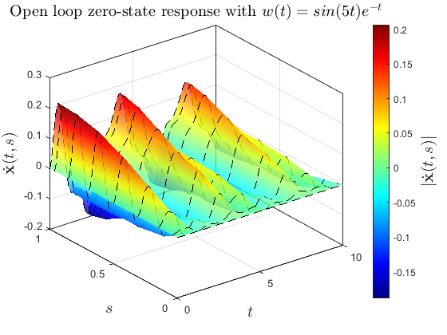
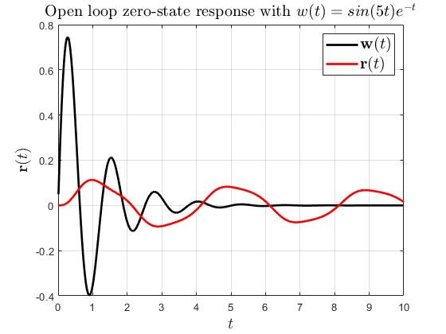
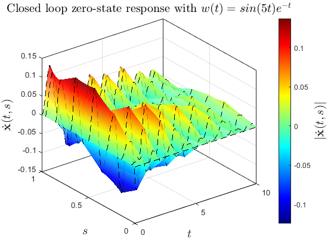
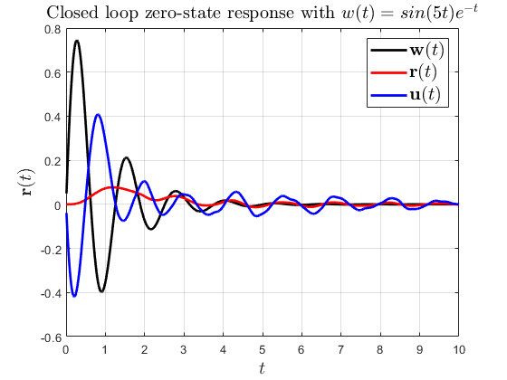
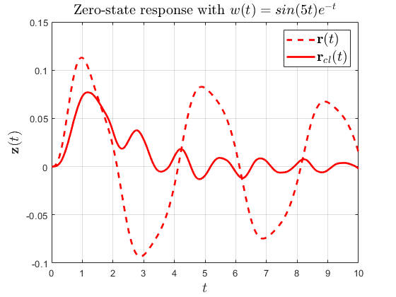

Introduction
DEMO1_Simple_Stability_Simulation_and_Control_Problem.m See Chapter 2 of the manual for a description.
This document illustrates, with a simple example, how PIETOOLS can be used to simulate systems dynamics, analyse stability and design optimal controllers for the system. The example is the damped wave equation with dynamic boundary input: xi_{tt}=c xi_{ss}-b xi_{t}+sw(t) using the state phi=(X1,X2) such that X1=xi_{s} and X2=xi_{t}: ODE x_{t} = -x + u(t) PDEs: X1_{t} = X2_{s} X2_{t} = cX1_{s}-bX2_{t}+sw(t) With BCs X1(s=0) = 0 X2(s=1) = x = exp(-t)x(t=0)+ int_0^t exp(-t+tau) u(tau) d tau
and regulated output z= int_0^1 xi_{s} ds = xi(s=1)-xi(s=0).
Contents
First, we clear the workspace of any interfering variables
clear all; clc;close all;
Declaring variables for symbolic manipulation
Define the parameters and variables: Here we declare symbolic variables t (st) and s (sx) that stand for time and space, respectively, in polynomial (symbolic) object format. Then, we define states {phi, x}, inputs {w, u}, and output {z}, which will be used to define the PDE system described earlier.
c=1;b=.1; pvar t s; syms st sx; phi=state('pde',2);x=state('ode'); w= state('in');u=state('in'); z=state('out',2);
Create the system
Here we use a sys() class object to store the equations that describe the PDE model. First, we initialize the object and then equations are added to the object using addequation() function. Finally, setControl() function is used designate u as a control input.
odepde = sys();
eq_dyn = [diff(x,t,1)==-x+u
diff(phi,t,1)==[0 1; c 0]*diff(phi,s,1)+[0;s]*w+[0 0;0 -b]*phi];
eq_out= z ==[int([1 0]*phi,s,[0,1])
u];
odepde = addequation(odepde,[eq_dyn;eq_out]);
odepde= setControl(odepde,[u]); % set the control signal
bc1 = [0 1]*subs(phi,s,0)==0; % add the boundary conditions
bc2 = [1 0]*subs(phi,s,1)==x;
odepde = addequation(odepde,[bc1;bc2]);
Initialized sys() object of type "pde" 5 equations were added to sys() object 1 inputs were designated as controlled inputs 2 equations were added to sys() object
Simulating the Open Loop system
Here we simulate the PDE system without any control input to see the open-loop behaviour of the system using PIESIM. The following options are used to define simulation parameters, initial conditions and disturbance inputs for the simulation.
opts.plot = 'no'; % Do not plot the final solution opts.N = 8; % Expand using 8 Chebyshev polynomials opts.tf = 10; % Simulate up to t = 1; opts.dt = 1e-2; % Use time step of 10^-3 opts.intScheme=1; % Time-step using Backward Differentiation Formula (BDF) ndiff = [0,2,0]; % The PDE state involves 2 first order differentiable state variables % To simulate the solution to the PDE system without controller we can use % the following code. uinput.ic.PDE = [0,0]; uinput.ic.ODE = 0; uinput.u=0; uinput.w = sin(5*st)*exp(-st); [solution,grids] = PIESIM(odepde, opts, uinput, ndiff); % Extract actual solution at each time step and defining discretized variables. tval = solution.timedep.dtime; phi1 = reshape(solution.timedep.pde(:,1,:),opts.N+1,[]); phi2 = reshape(solution.timedep.pde(:,2,:),opts.N+1,[]); zval =solution.timedep.regulated; wval=subs(uinput.w,st,tval); % Plots of open-loop system. figure(1); surf(tval,grids.phys,phi2,'FaceAlpha',0.75,'Linestyle','--','FaceColor','interp','MeshStyle','row'); h=colorbar ; colormap jet box on ylabel(h,'$|\dot{\mathbf{x}}(t,s)|$','interpreter', 'latex','FontSize',15) set(gcf, 'Color', 'w'); xlabel('$t$','FontSize',15,'Interpreter','latex'); ylabel('$s$','FontSize',15,'Interpreter','latex'); zlabel('$\dot{\mathbf{x}}(t,s)$','FontSize',15,'Interpreter','latex'); title('Open loop zero-state response with $w(t)=sin(5t)e^{-t}$','Interpreter','latex','FontSize',15); figure(2); plot(tval,wval,'k',tval,zval(1,:),'r','LineWidth',2) grid on box on set(gcf, 'Color', 'w'); legend('$\mathbf{w}(t)$','$\mathbf{r}(t)$','Interpreter','latex','FontSize',15) xlabel('$t$','FontSize',15,'Interpreter','latex'); ylabel('$\mathbf{r}(t)$','FontSize',15,'Interpreter','latex'); title('Open loop zero-state response with $w(t)=sin(5t)e^{-t}$','Interpreter','latex','FontSize',15);
Warning: option Norder is not defined. Setting to a default value of 2 Solving PDE problem Encountered 2 state components: x₁(t), of size 1, finite-dimensional; x₂(t,s), of size 2, differentiable up to order (1) in variables (s); Encountered 1 actuator input: u(t), of size 1; Encountered 1 exogenous input: w(t), of size 1; Encountered 1 regulated output: z(t), of size 2; Encountered 2 boundary conditions: F₁(t) = 0, of size 1; F₂(t) = 0, of size 1; The order of the state components x has not changed. Watning: uinput.ifexact is not specified. Defaulting to false --- Reordering the state components to allow for representation as PIE --- The order of the state components x has not changed. --- Converting ODE-PDE to PIE --- Setting up Chebyshev matrices for the PIE system Setup completed: integrating in time Time integration scheme is numerically stable for the given problem. Any observed instabilities must be physical. Solution of an ODE state 1 at a final time 10.000000 is 0.0000 Value of a regulated output 1 at a final time 10.000000 is 0.0146 Value of a regulated output 2 at a final time 10.000000 is 0.0000 
Stability Analysis of the system
To use LPIs for the test of internal stability, we have to first convert the PDE representation to a PIE representation. This is performed using the following code.
PIE = convert(odepde,'pie'); PIE = PIE.params; T = PIE.T; A = PIE.A; C1 = PIE.C1; B2 = PIE.B2; B1 = PIE.B1; D11 = PIE.D11; D12 = PIE.D12; % Pick parameters for the LPI optimization problem and perform stability % test. settings = lpisettings('light'); [prog, P] = lpisolve(PIE,settings,'stability'); % Other LPI tests: % Similarly, we can search for an input-to-output L2-gain bound using LPIs % as shown below. [prog, P, gamma] = lpisolve(PIE,settings,'l2gain');
--- Reordering the state components to allow for representation as PIE ---
The order of the state components x has not changed.
--- Converting ODE-PDE to PIE ---
Initialized sys() object of type "pde"
Conversion to pie was successful
--- Executing Primal Stability Test ---
- Parameterizing Positive Lyapunov Operator using specified options...
- Constructing the Negativity Constraint...
- Enforcing the Negativity Constraint...
- Using an Equality constraint...
- Solving the LPI using the specified SDP solver...
Size: 755 181
SeDuMi 1.3 by AdvOL, 2005-2008 and Jos F. Sturm, 1998-2003.
Alg = 2: xz-corrector, Adaptive Step-Differentiation, theta = 0.250, beta = 0.500
eqs m = 181, order n = 44, dim = 756, blocks = 4
nnz(A) = 4607 + 0, nnz(ADA) = 32585, nnz(L) = 16383
it : b*y gap delta rate t/tP* t/tD* feas cg cg prec
0 : 9.60E-01 0.000
1 : -1.99E-06 2.66E-01 0.000 0.2773 0.9000 0.9000 1.00 1 1 1.5E+00
2 : 4.50E-06 9.03E-02 0.000 0.3393 0.9000 0.9000 1.00 1 1 5.2E-01
3 : 1.62E-06 3.27E-02 0.000 0.3621 0.9000 0.9000 1.00 1 1 1.9E-01
4 : 1.79E-07 8.69E-03 0.000 0.2657 0.9000 0.9000 1.00 1 1 5.0E-02
5 : 8.34E-10 2.20E-04 0.000 0.0253 0.9900 0.9900 1.00 1 1 1.3E-03
6 : -4.24E-14 2.44E-09 0.000 0.0000 1.0000 1.0000 1.00 1 1 1.8E-08
7 : -1.81E-17 2.07E-12 0.000 0.0008 0.9999 0.9996 1.00 1 1 1.2E-11
iter seconds digits c*x b*y
7 0.4 13.9 0.0000000000e+00 -1.8097152689e-17
|Ax-b| = 1.8e-11, [Ay-c]_+ = 1.5E-12, |x|= 1.2e+01, |y|= 6.6e+00
Detailed timing (sec)
Pre IPM Post
1.880E-01 4.060E-01 3.100E-02
Max-norms: ||b||=2.000000e-04, ||c|| = 0,
Cholesky |add|=0, |skip| = 94, ||L.L|| = 115.464.
Residual norm: 1.8292e-11
iter: 7
feasratio: 1.0000
pinf: 0
dinf: 0
numerr: 0
timing: [0.1880 0.4060 0.0310]
wallsec: 0.6250
cpusec: 0.5625
--- Searching for Hinf gain bound using primal KYP lemma ---
- Declaring Positive Lyapunov Operator variable using specified options...
- Constructing the Negativity Constraint...
- Enforcing the Negativity Constraint...
- Using an Equality constraint...
- Solving the LPI using the specified SDP solver...
Size: 931 265
SeDuMi 1.3 by AdvOL, 2005-2008 and Jos F. Sturm, 1998-2003.
Alg = 2: xz-corrector, Adaptive Step-Differentiation, theta = 0.250, beta = 0.500
Detected 1 diagonal SDP block(s) with 1 linear variables
Put 1 free variables in a quadratic cone
eqs m = 265, order n = 53, dim = 933, blocks = 5
nnz(A) = 5490 + 0, nnz(ADA) = 66439, nnz(L) = 33352
it : b*y gap delta rate t/tP* t/tD* feas cg cg prec
0 : 5.03E-01 0.000
1 : 1.45E+00 1.32E-01 0.000 0.2618 0.9000 0.9000 0.60 1 1 1.9E+00
2 : 1.99E+00 4.73E-02 0.000 0.3589 0.9000 0.9000 1.01 1 1 6.9E-01
3 : 3.00E+00 1.49E-02 0.000 0.3162 0.9000 0.9000 0.55 1 1 3.0E-01
4 : 3.90E+00 4.72E-03 0.000 0.3158 0.9000 0.9000 0.61 1 1 1.1E-01
5 : 4.52E+00 1.90E-03 0.000 0.4027 0.9000 0.9000 0.86 1 1 4.8E-02
6 : 4.94E+00 6.29E-04 0.000 0.3310 0.9000 0.9000 1.12 1 1 1.5E-02
7 : 5.11E+00 1.73E-04 0.000 0.2748 0.9000 0.9000 1.14 1 1 3.8E-03
8 : 5.15E+00 4.83E-05 0.000 0.2797 0.9000 0.9000 1.07 1 1 1.0E-03
9 : 5.16E+00 1.55E-05 0.000 0.3211 0.9000 0.9000 1.02 1 1 3.3E-04
10 : 5.17E+00 1.75E-06 0.000 0.1128 0.9000 0.8977 0.94 1 1 1.0E-04
11 : 5.17E+00 5.62E-07 0.000 0.3210 0.8686 0.9000 0.85 2 2 3.7E-05
12 : 5.17E+00 2.34E-07 0.000 0.4167 0.9000 0.9109 0.76 2 2 1.7E-05
13 : 5.17E+00 1.04E-07 0.000 0.4440 0.9000 0.9139 0.69 2 2 8.6E-06
14 : 5.17E+00 4.68E-08 0.000 0.4504 0.9000 0.9216 0.64 5 5 4.5E-06
15 : 5.17E+00 2.38E-08 0.000 0.5083 0.9000 0.9384 0.61 9 6 2.6E-06
16 : 5.17E+00 1.43E-08 0.000 0.6027 0.9000 0.8950 0.65 9 9 1.8E-06
17 : 5.17E+00 8.55E-09 0.254 0.5962 0.9000 0.9342 0.65 12 9 1.2E-06
18 : 5.17E+00 5.50E-09 0.311 0.6437 0.9000 0.9316 0.64 20 19 8.1E-07
Run into numerical problems.
iter seconds digits c*x b*y
18 0.4 6.0 5.1664118557e+00 5.1664172384e+00
|Ax-b| = 4.0e-06, [Ay-c]_+ = 4.0E-08, |x|= 2.4e+02, |y|= 1.5e+04
Detailed timing (sec)
Pre IPM Post
3.100E-02 3.930E-01 0.000E+00
Max-norms: ||b||=1, ||c|| = 1,
Cholesky |add|=6, |skip| = 131, ||L.L|| = 5.24206e+06.
Residual norm: 3.9914e-06
iter: 18
feasratio: 0.6360
pinf: 0
dinf: 0
numerr: 1
timing: [0.0310 0.3930 0]
wallsec: 0.4240
cpusec: 0.4688
The H-infty norm of the given system is upper bounded by:
5.1664
Find Hinf-optimal controller
Next, we wish to find a controller that improves the input-to-output performance. For that, we can solve the Hinf-optimal controller LPI using the following code. The function, if the optimization problem is successfully solved, returns the controller, Kval and the L2-gain metric for the closed loop system, gam_val.
[prog, Kval, gam_val] = lpisolve(PIE, settings,'hinf-controller');
--- Executing Search for H_infty Optimal Controller ---
- Declaring Positive Storage Operator variable and indefinite Controller operator variable using specified options...
- Parameterize the derivative inequality...
- Enforcing the Negativity Constraint...
- Using an Equality constraint...
- Solving the LPI using the specified SDP solver...
Size: 938 263
SeDuMi 1.3 by AdvOL, 2005-2008 and Jos F. Sturm, 1998-2003.
Alg = 2: xz-corrector, Adaptive Step-Differentiation, theta = 0.250, beta = 0.500
Detected 1 diagonal SDP block(s) with 1 linear variables
Put 8 free variables in a quadratic cone
eqs m = 263, order n = 53, dim = 940, blocks = 5
nnz(A) = 4601 + 0, nnz(ADA) = 65061, nnz(L) = 32662
it : b*y gap delta rate t/tP* t/tD* feas cg cg prec
0 : 6.20E-01 0.000
1 : 8.10E-01 1.66E-01 0.000 0.2683 0.9000 0.9000 1.20 1 1 1.9E+00
2 : 9.58E-01 6.12E-02 0.000 0.3680 0.9000 0.9000 1.55 1 1 5.7E-01
3 : 9.56E-01 2.01E-02 0.000 0.3280 0.9000 0.9000 1.24 1 1 1.7E-01
4 : 8.80E-01 6.56E-03 0.000 0.3268 0.9000 0.9000 1.12 1 1 5.4E-02
5 : 8.30E-01 2.43E-03 0.000 0.3701 0.9000 0.9000 1.08 1 1 2.0E-02
6 : 8.05E-01 8.86E-04 0.000 0.3651 0.9000 0.9000 0.97 1 1 7.4E-03
7 : 8.05E-01 1.57E-04 0.152 0.1767 0.9000 0.0000 0.87 1 1 4.1E-03
8 : 7.95E-01 2.71E-05 0.000 0.1728 0.9270 0.9000 0.88 1 1 9.5E-04
9 : 7.86E-01 7.94E-06 0.000 0.2934 0.9067 0.9000 0.69 1 1 3.2E-04
10 : 7.83E-01 2.87E-06 0.000 0.3615 0.6270 0.9000 0.77 1 1 1.4E-04
11 : 7.81E-01 1.30E-06 0.000 0.4544 0.9000 0.6939 0.75 1 1 7.1E-05
12 : 7.80E-01 4.64E-07 0.000 0.3557 0.9000 0.9000 0.82 1 1 2.7E-05
13 : 7.79E-01 1.49E-07 0.000 0.3222 0.9000 0.9000 0.84 1 1 9.5E-06
14 : 7.79E-01 4.08E-08 0.000 0.2733 0.9000 0.9000 0.89 1 1 2.8E-06
15 : 7.79E-01 1.12E-08 0.000 0.2736 0.9000 0.9000 0.91 1 1 7.9E-07
16 : 7.79E-01 2.34E-09 0.000 0.2096 0.9000 0.9000 0.95 1 1 1.7E-07
17 : 7.79E-01 1.72E-10 0.112 0.0735 0.9900 0.9900 0.98 1 2 1.3E-08
18 : 7.79E-01 1.39E-11 0.201 0.0809 0.9900 0.9900 1.00 2 2 1.0E-09
iter seconds digits c*x b*y
18 0.3 8.7 7.7865323963e-01 7.7865324107e-01
|Ax-b| = 5.8e-10, [Ay-c]_+ = 5.9E-10, |x|= 4.5e+01, |y|= 3.4e+00
Detailed timing (sec)
Pre IPM Post
1.600E-02 2.340E-01 0.000E+00
Max-norms: ||b||=1, ||c|| = 1,
Cholesky |add|=0, |skip| = 132, ||L.L|| = 3897.34.
Residual norm: 5.7884e-10
iter: 18
feasratio: 0.9977
pinf: 0
dinf: 0
numerr: 0
timing: [0.0160 0.2340 0]
wallsec: 0.2500
cpusec: 0.2969
The closed-loop H-infty norm of the given system is upper bounded by:
0.7787
Constructing closed-loop system and simulation
Now, we construct the closed-loop system using the controller obtained by solving the above LPI and then re-runs the simulations to see if there was any improvement in the performance.
PIE_CL = closedLoopPIE(PIE,Kval);
PIE_CL = pie_struct(PIE_CL);
PIE_CL = initialize(PIE_CL);
% Simulate the solution to the PIE with controller
[solution_CL,grids] = PIESIM(PIE_CL,opts,uinput,ndiff);
Warning: option Norder is not defined. Setting to a default value of 2 Solving PIE problem Setting up Chebyshev matrices for the PIE system Setup completed: integrating in time Time integration scheme is numerically stable for the given problem. Any observed instabilities must be physical. Solution of an ODE state 1 at a final time 10.000000 is 0.0027 Value of a regulated output 1 at a final time 10.000000 is -0.0020 Value of a regulated output 2 at a final time 10.000000 is -0.0011
Plotting the closed loop response
Having found an optimal controller, constructed closed loop system, and running PIESIM to simulate, we can now extract the solution and plot it against the open-loop response to see the benefit in using the controller. Firstly, we notice that the L2-gain bound has significantly lowered (from 5.2 to 0.78). Then, looking at the output in presence of a disturbance, we see that the effect of disturbance on this neutrally stable system is reduced.
tval = solution_CL.timedep.dtime; phi1 = reshape(solution_CL.timedep.pde(:,1,:),opts.N+1,[]); phi2 = reshape(solution_CL.timedep.pde(:,2,:),opts.N+1,[]); zval_cl =solution_CL.timedep.regulated; wval=subs(uinput.w,st,tval); % Plots Closed Loop. figure(3) surf(tval,grids.phys,phi2,'FaceAlpha',0.75,'Linestyle','--','FaceColor','interp','MeshStyle','row'); h=colorbar ; colormap jet box on ylabel(h,'$|\dot{\mathbf{x}}(t,s)|$','interpreter', 'latex','FontSize',15) set(gcf, 'Color', 'w'); xlabel('$t$','FontSize',15,'Interpreter','latex'); ylabel('$s$','FontSize',15,'Interpreter','latex'); zlabel('$\dot{\mathbf{x}}(t,s)$','FontSize',15,'Interpreter','latex'); title('Closed loop zero-state response with $w(t)=sin(5t)e^{-t}$','Interpreter','latex','FontSize',15); figure(4); plot(tval,wval,'k',tval,zval_cl(1,:),'r',tval,zval_cl(2,:),'b','LineWidth',2) grid on box on set(gcf, 'Color', 'w'); legend('$\mathbf{w}(t)$','$\mathbf{r}(t)$','$\mathbf{u}(t)$','Interpreter','latex','FontSize',15) xlabel('$t$','FontSize',15,'Interpreter','latex'); ylabel('$\mathbf{r}(t)$','FontSize',15,'Interpreter','latex'); title('Closed loop zero-state response with $w(t)=sin(5t)e^{-t}$','Interpreter','latex','FontSize',15); figure(5); plot(tval,zval(1,:),'r--',tval,zval_cl(1,:),'r','LineWidth',2) grid on box on set(gcf, 'Color', 'w'); legend('$\mathbf{r}(t)$','$\mathbf{r}_{cl}(t)$','Interpreter','latex','FontSize',15) xlabel('$t$','FontSize',15,'Interpreter','latex'); ylabel('$\mathbf{z}(t)$','FontSize',15,'Interpreter','latex'); title('Zero-state response with $w(t)=sin(5t)e^{-t}$','Interpreter','latex','FontSize',15);  